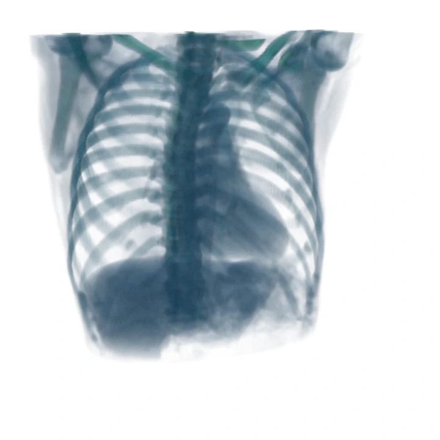
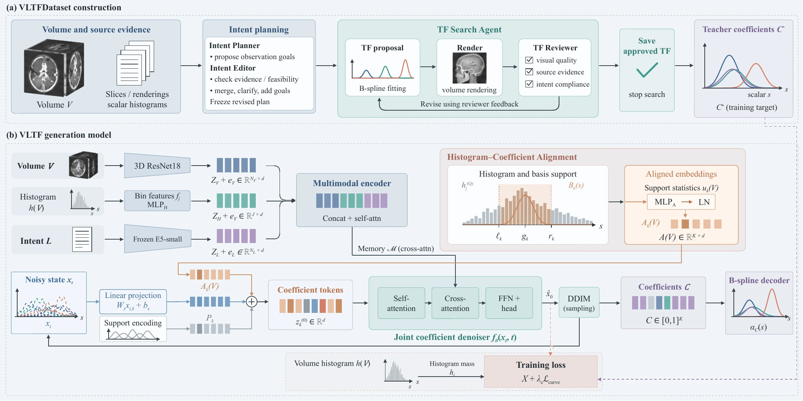
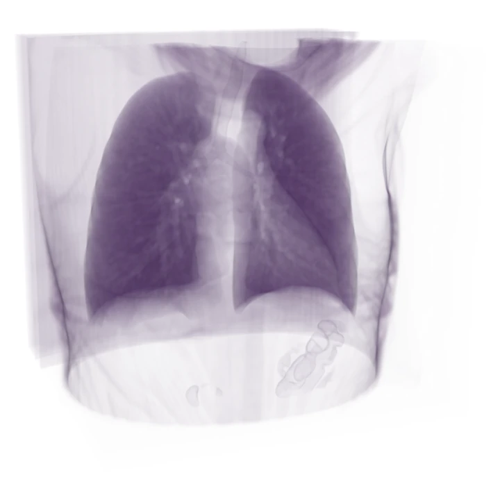
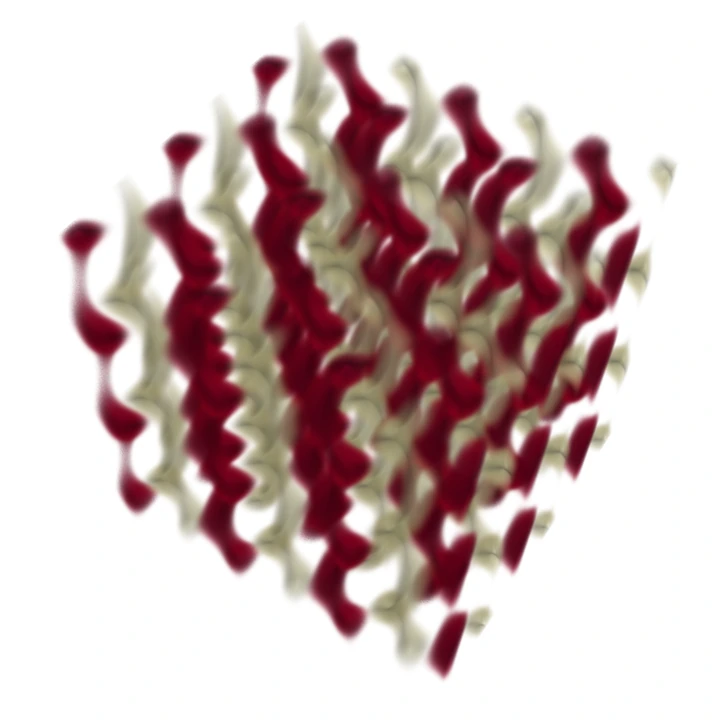
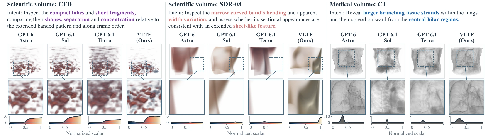

Medical CT
Scans from TotalSegmentator v2.0.1, with intents covering anatomical morphology, spatial relationships, and material appearance.
- Volumes
- 1,228
- Triplets
- 7,284
1 University of Science and Technology of China (USTC) 2 Nanyang Technological University (NTU)
Language-guided transfer function generation for direct volume rendering
Transfer functions determine which structures become visible in direct volume rendering. VLTF is a conditional diffusion model that generates continuous opacity transfer functions from volumes and natural-language observation intents. To construct paired supervision, VLTFDataset uses offline intent planning, agentic transfer function search, and vision–language review. VLTF predicts a compact set of B-spline coefficients from spatial, histogram, and language features. Histogram–Coefficient Alignment links each coefficient to the scalar distribution over its basis support. On medical and scientific volumes, VLTF produces intent-dependent visualizations and generates transfer functions in an average of 0.453 s per task on a single A100, without online LLM calls.
An opacity transfer function maps scalar values to opacity. VLTF learns that mapping from a 3D volume and a natural-language observation goal.

Select an observation intent to see how the generated opacity curve changes which structures are visible in the same volume.

Show the overall shapes of both lungs, including their apices, basal contours and medial indentations around the heart.
An offline agent proposes observation intents, searches for matching transfer functions through rendering feedback, and saves approved volume–intent–TF triplets.

Scans from TotalSegmentator v2.0.1, with intents covering anatomical morphology, spatial relationships, and material appearance.

Scalar fields from The Well, yt sample data, JHTDB, and Open SciVis, spanning fluid flow, magnetohydrodynamics, and reaction–diffusion.
Train and test splits are defined by volume, so all intents for a given volume stay in the same split.
VLTF matched the highest expert ratings among evaluated methods on medical CT and received the highest ratings on scientific volumes.
Mean seconds per task on the combined test sets. VLTF uses one A100 and 50 DDIM steps. Timing excludes offline preprocessing and final rendering.
| Domain | VLTF | Best baseline |
|---|---|---|
| Medical | 4.0 / 4.0 / 4.0 | 4.0 / 4.0 / 4.0 |
| Scientific | 3.5 / 3.5 / 3.5 | 2.5 / 2.5 / 3.0 |
Six experts rated 216 volume–intent pairs on a 1–5 scale. Scores are listed in the order of intent alignment, target visibility, and context preservation.
